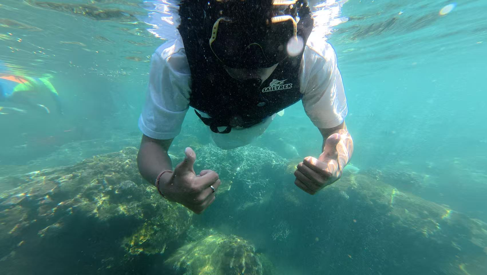
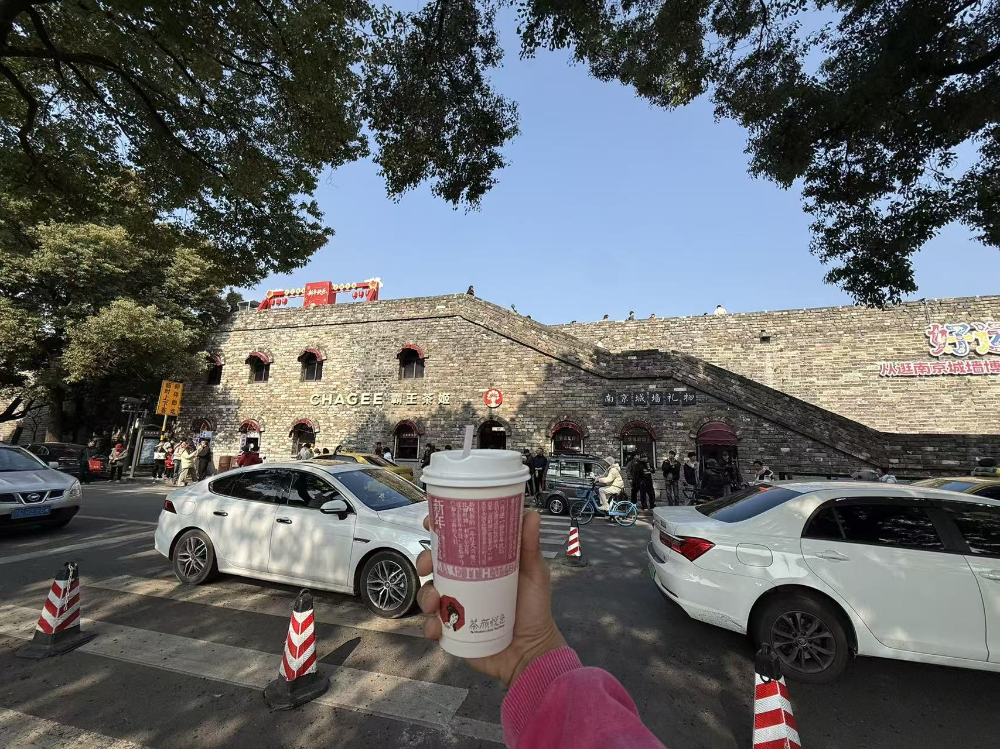
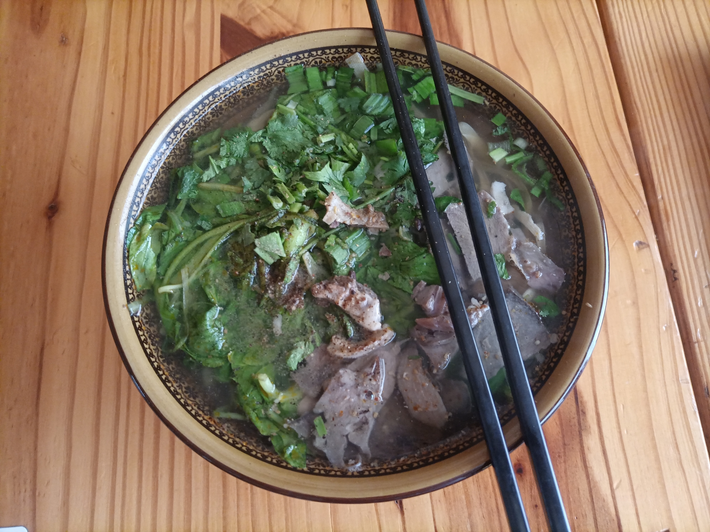
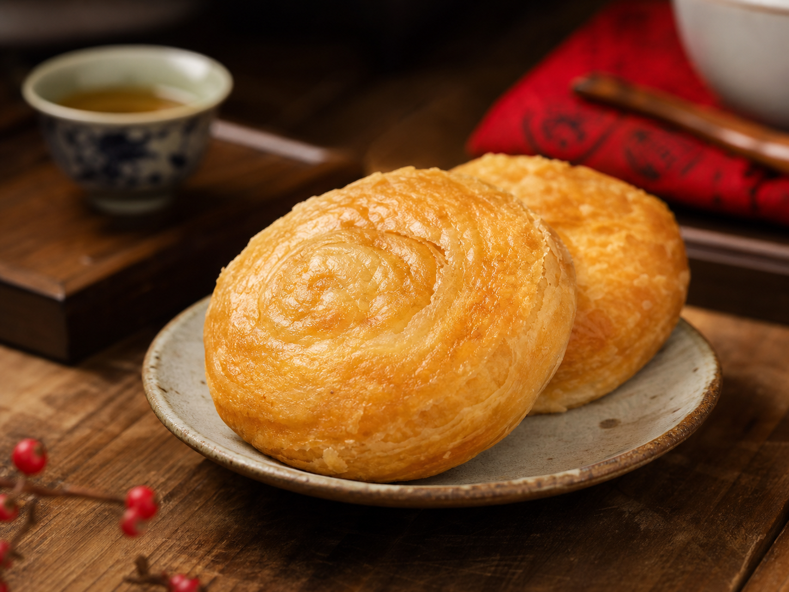
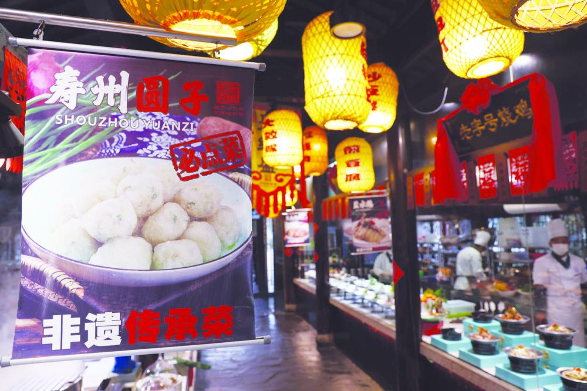

从寿县出发
点击一个城市，会看到这段旅行的关键词和对应照片。
About
我叫米硕，学号 23110941030，来自安徽寿县。现在在昆明学院信息工程学院学习数据科学与大数据专业，正在持续训练 Python、机器学习、数据可视化和 Web 展示能力。
课业之外，我很喜欢旅游。去过厦门、南京、杭州、三亚、鄂尔多斯，也喜欢把途中看到的城市夜景、海边、古城和建筑拍下来。
Travel Album
海边、古城、夜景和路上的风，都放进这个小相册里。
点击一个城市，会看到这段旅行的关键词和对应照片。


Hometown
寿县古称寿春、寿阳、寿州，位于淮河中游南岸，是国务院公布的第二批国家历史文化名城。这里有楚文化积淀、淝水之战记忆，也有“豆腐发祥地”的烟火气。
寿县古城墙为宋代重筑，周长约 7147 米，四门设瓮城，兼具军事防御和防洪功能。走在城墙边，会觉得这座城不是只停在书本里，而是还在继续生活。
公开信息显示，2026 年央视中秋晚会举办地为安徽淮南。寿县作为淮南重要的历史文化名片，我想把“寿州古城 + 明月 + 团圆”的感觉放进主页里。中秋节在 2026 年 9 月 25 日，刚好适合把家乡文化、灯火和团圆写进这个网页。
把晚会、灯火、月亮和家乡记忆，提前放进这个页面里。
城墙、城门、护城河共同构成一座仍在呼吸的古城。
关于豆腐起源的故事，让家乡有了很特别的烟火味。
古城遇见明月，是最适合把家乡讲给大家听的时刻。


愿明月照古城，灯火照归人。这里先做成预告区，后面可以换成晚会海报、节目单或现场照片。
家乡介绍参考寿县人民政府公开资料、人民网安徽关于 2026 年央视中秋晚会落地淮南的报道；家乡图片来自 Wikimedia Commons：Whisper of the heart《Tongfei Gate, Shou County.jpg》、超越宝宝《Shou County City Wall Gate.jpg》，按 CC BY-SA 4.0 等许可使用。
Hometown Taste
如果说古城是寿县的轮廓，那这些味道就是回家的入口。

汤色浓、牛肉香，配上粉丝和千张，是皖北很有代表性的日常味道。

金黄酥香，名字里带着历史传说，是寿县很适合写进主页的特色小吃。

外层焦香、内里绵软，适合和牛肉汤一起出现，一口就是家乡烟火气。
绿豆圆子图片参考淮南市人民政府“寿州圆子”公开资料。
Mid-Autumn Game
30 秒挑战模式，接住越多月饼，寿州中秋的气氛就越热闹。
准备好之后点击开始，把寿州中秋的月饼都接住。
Selected Work
围绕行情数据获取、特征工程、模型训练、可视化报告和网页展示完成的一套综合项目。
使用卷积神经网络处理图像分类任务，整理训练过程、评估指标和实验报告。
围绕 SVD、CNN、GAN 等方法完成实验代码、结果可视化和文档沉淀。
Skills
Contact
这里后续可以放邮箱、GitHub、微信二维码、简历下载入口，或者中秋晚会报名链接。